Inhalt Index DeskTop Bronstein

 Algebra und Diskrete Mathematik Klassische algebraische Strukturen Darstellungen halbeinfacher Lie-Gruppen
Algebra und Diskrete Mathematik Klassische algebraische Strukturen Darstellungen halbeinfacher Lie-Gruppen


Die Darstellung einer halbeinfachen LIE-Algebra in Standardbasis führt im Darstellungsraum Vm auf die m x m-Matrizen 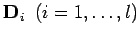 und 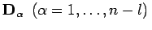. Da alle Matrizen 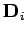 untereinander kommutieren, können sie gleichzeitig auf Diagonalform gebracht werden; sie besitzen n linear unabhängige, simultane Eigenvektoren 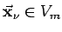
| 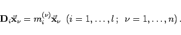 | (5.157) |
Der Vektor
| 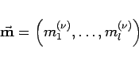 | (5.158) |
in einem l-dimensionalen Raum wird als Gewicht des Eigenvektors 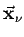 bezeichnet. Die Matrixelemente der Diagonalmatrix sind die i-te Komponente der n Gewichtsvektoren 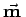,
| 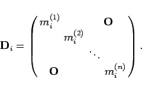 | (5.159) |
Die Wurzeln 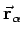 einer LIE-Algebra und die Gewichte 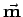 ihrer Darstellungen sind in einem Vektorraum gleicher Dimension erklärt. Ein Gewicht heißt einfach, wenn keine Entartung vorliegt. Von zwei Gewichten und 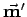 sagt man ist größer als , wenn in 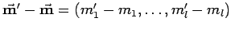 die erste von Null verschiedene Komponente positiv ist. Das größte Gewicht einer Darstellung wird auch als höchstes Gewicht bezeichnet. Es gilt: Jede irreduzible Darstellung einer halbeinfachen LIE-Algebra wird durch ihr höchstes Gewicht, das stets einfach ist, eindeutig charakterisiert. Außerdem kann man zeigen: Ist der Vektor 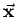 vom Gewicht , dann ist der Vektor 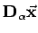 vom Gewicht 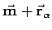:
| 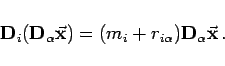 | (5.160) |
Mit Hilfe der Leiteroperatoren 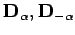 lassen sich also -- ausgehend vom Vektor 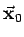 zum höchsten Gewicht -- die Eigenvektoren zu allen anderen Gewichten sukzessive konstruieren: